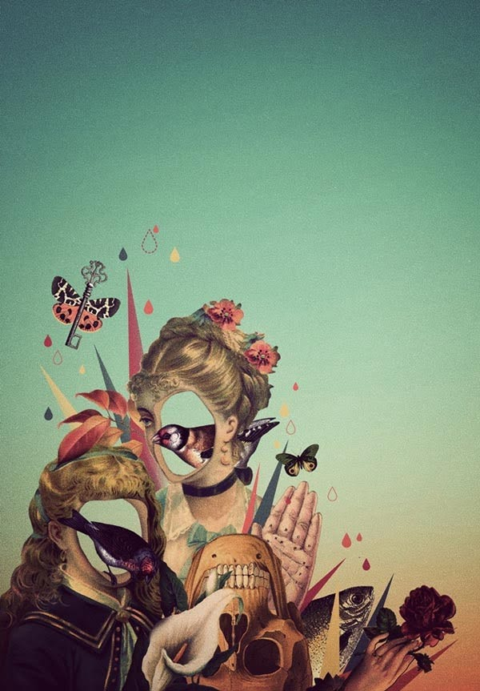

Indian, 34
There are many characters conjured up by Nikhil Chopra, one of India’s leading performance artists and the current artist-in-residence at the Metropolitan Museum of Art.
Whether roving the Met or walking from Athens to Kassel for Documenta 14 in 2017, contemplative drawing is integral to Chopra’s practice. He explores the complexities of colonialism and its legacies, implicating his audience in the process.
In his “Memory Drawings” series (begun in 2007), Chopra fuses autobiography with collective history and nostalgia by taking on the persona of Yog Raj Chitrakar.
This itinerant, dapper character has traversed a range of cities including Mumbai, New York, and Oslo.
He uses drawing performatively to access memories of landscape and consider identity and convoluted histories, creating vast charcoal drawings made on stretches of canvas that often take the form of a tent.
Chopra’s other whimsical characters have appeared at the Second Yinchuan Biennale in China in 2018, the Sharjah Biennial 12 in 2015, and the 53rd Venice Biennale in 2009.
|  |
|
|
|